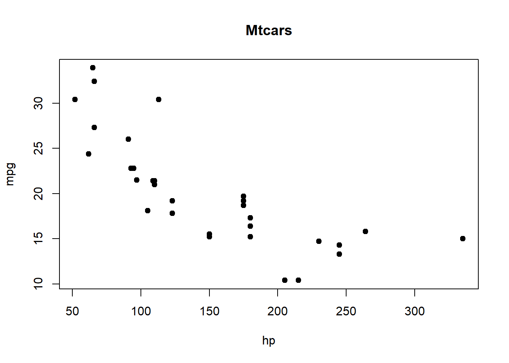
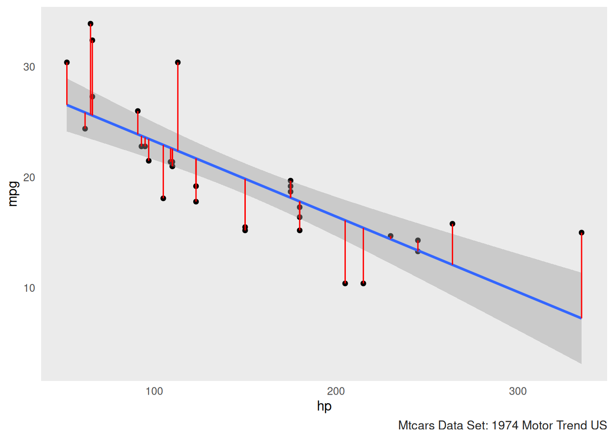

Regression – is the process of estimating a best-fitting line that summarizes the relationship between a predictor variable (Independent Variable) and a criterion variable (Dependent Variable).
Regression Analysis – researchers fit a regression line to a sample of data, estimate the parameters of the regression equation (i.e., the constant and regression coefficient), and use the resulting equation to predict scores on a criterion variable.
Bivariate – means that the analyses discussed include just 2 variables, a predictor variable (the X variable), and a criterion variable (the Y variable).
Linear – refers to the fact, when the Y scores are plotted against the X scores, it should be possible to fit a best-fitting straight line through the center of the scores, as opposed to a best-fitting curved line.
Linearity – should be able to fit a best-fitting straight line through the scatterplot.
Independence – each observation included in the sample should be drawn independently from the population of interest. Researchers should not have taken repeated measures on the same variable from the same participant.
Homogeneity of Variance (Homoscedasticity) – the variance of the Y scores should remain fairly constant at all values of X.
Normality – residuals of prediction should be normally distributed. Bivariate Normality – for any specific score on one of the variables, scores on the other variable should follow a normal distribution.
Here we have the formula for the bivariate regression equation. The regression equation takes the following form: \[\Large Regression\;Equation:\;\;\;\hat{y} = a + \beta(X) \] \[ \hat{y}\;\;–\;the\;predicted\;score\;on\;the\;criterion\;variable \] \[ a\;–\;the\;constant\;or\;the\;intercept\;of\;the\;regression\;equation. \] \[ \beta\;–\;the\;unstandardized\;regression\;coefficient.\\Represents\;the\;amount\;of\;change\;in\;Y\;\\that\;is \;associated\;with\;a\;one-unit\;change\;in\;X\;\\when\;both\;variables\;are\;in\;raw\;score\;form.\\Also\;known\;as\;the\;regression\;weight\;or\;slope. \]
Here we plot our data to get a good look at the shape of the data set.
We can utilize the following plot function to create a basic
scatterplot in R.
## The following object is masked from package:ggplot2:
##
## mpg
We compute the residuals by taking the actual y value and subtract the predicted y value. The residual for each observation is the difference between the predicted values of y and the actual values of y. Calculating the residual helps us to see if we have over predicted or underpredicted for \(\hat{y}\).
\[\Large Residual = actual\;y\;value - predicted\;y\;value \]
\[\Large r_{1} = y_{i} - \hat{y_{i}} \]
## [1] "Predicted y Values"## Mazda RX4 Mazda RX4 Wag Datsun 710 Hornet 4 Drive
## 22.593750 22.593750 23.753631 22.593750
## Hornet Sportabout Valiant Duster 360 Merc 240D
## 18.158912 22.934891 13.382932 25.868707
## Merc 230 Merc 280 Merc 280C Merc 450SE
## 23.617174 21.706782 21.706782 17.817770
## Merc 450SL Merc 450SLC Cadillac Fleetwood Lincoln Continental
## 17.817770 17.817770 16.112064 15.429781
## Chrysler Imperial Fiat 128 Honda Civic Toyota Corolla
## 14.406357 25.595794 26.550990 25.664022
## Toyota Corona Dodge Challenger AMC Javelin Camaro Z28
## 23.480718 19.864619 19.864619 13.382932
## Pontiac Firebird Fiat X1-9 Porsche 914-2 Lotus Europa
## 18.158912 25.595794 23.890087 22.389065
## Ford Pantera L Ferrari Dino Maserati Bora Volvo 142E
## 12.086595 18.158912 7.242387 22.661978## [1] "Actual y Values"## [1] 21.0 21.0 22.8 21.4 18.7 18.1 14.3 24.4 22.8 19.2 17.8 16.4 17.3 15.2 10.4
## [16] 10.4 14.7 32.4 30.4 33.9 21.5 15.5 15.2 13.3 19.2 27.3 26.0 30.4 15.8 19.7
## [31] 15.0 21.4## [1] "Manually Calculated Residuals"## mtcars$mpg - mpg_prediction$fitted.values
## Mazda RX4 -1.59374995
## Mazda RX4 Wag -1.59374995
## Datsun 710 -0.95363068
## Hornet 4 Drive -1.19374995
## Hornet Sportabout 0.54108812
## Valiant -4.83489134
## Duster 360 0.91706759
## Merc 240D -1.46870730
## Merc 230 -0.81717412
## Merc 280 -2.50678234
## Merc 280C -3.90678234
## Merc 450SE -1.41777049
## Merc 450SL -0.51777049
## Merc 450SLC -2.61777049
## Cadillac Fleetwood -5.71206353
## Lincoln Continental -5.02978075
## Chrysler Imperial 0.29364342
## Fiat 128 6.80420581
## Honda Civic 3.84900992
## Toyota Corolla 8.23597754
## Toyota Corona -1.98071757
## Dodge Challenger -4.36461883
## AMC Javelin -4.66461883
## Camaro Z28 -0.08293241
## Pontiac Firebird 1.04108812
## Fiat X1-9 1.70420581
## Porsche 914-2 2.10991276
## Lotus Europa 8.01093488
## Ford Pantera L 3.71340487
## Ferrari Dino 1.54108812
## Maserati Bora 7.75761261
## Volvo 142E -1.26197823## [1] "Residual Values"## Mazda RX4 Mazda RX4 Wag Datsun 710 Hornet 4 Drive
## -1.59374995 -1.59374995 -0.95363068 -1.19374995
## Hornet Sportabout Valiant Duster 360 Merc 240D
## 0.54108812 -4.83489134 0.91706759 -1.46870730
## Merc 230 Merc 280 Merc 280C Merc 450SE
## -0.81717412 -2.50678234 -3.90678234 -1.41777049
## Merc 450SL Merc 450SLC Cadillac Fleetwood Lincoln Continental
## -0.51777049 -2.61777049 -5.71206353 -5.02978075
## Chrysler Imperial Fiat 128 Honda Civic Toyota Corolla
## 0.29364342 6.80420581 3.84900992 8.23597754
## Toyota Corona Dodge Challenger AMC Javelin Camaro Z28
## -1.98071757 -4.36461883 -4.66461883 -0.08293241
## Pontiac Firebird Fiat X1-9 Porsche 914-2 Lotus Europa
## 1.04108812 1.70420581 2.10991276 8.01093488
## Ford Pantera L Ferrari Dino Maserati Bora Volvo 142E
## 3.71340487 1.54108812 7.75761261 -1.26197823Here we find the mean of our criterion (y) value of mpg.
\[\Large \bar{y} = \frac{\sum{y}}{n} \]
We can utilize the mean function to the calculate the mean of mpg (miles per gallon).
## [1] 20.09062Coefficient of Determination – indicates the percent of variance in the criterion variable that is accounted for by the predictor variable.
\[ Coefficient\;of\;Determination:\;\;R^2 =\;1-\; \frac{sum\;squared\;regression\;(SSR)}{sum\;squares\;total\;(SST)} \]
\[ =1- \frac{\sum(y_{i}\;-\;\hat{y_{i}})^2}{\sum(y_{i}\;-\;\overline{y})^2} \\ \\ y_{i} = actual\;y\;values \\ \hat{y_i} = predicted\;y\;values \\ \overline{y} = mean\;of\;y \\ \sum\;or\;sigma = sum \]
\[ \sum(y_{i}\;-\;\hat{y_{i}})^2 \]
## [1] 447.6743\[ \sum(y_{i}\;-\;\overline{y})^2 \]
## [1] 1126.047\[ R^2 = 1- \frac{447.6743}{1126.047} \] \[ R^2 = 1- 0.3975627 \] \[ R^2 = 0.6024373 \\ R^2 = 0.6024 \]
\[ Adj.R^2\;or\;R^2_{adj} = 1 - (1-R^2)\;\cdot\;(n-1)/(n-p-1) \\ Adj.R^2\;or\;R^2_{adj} = 1 - (1-0.6024373)\;\cdot\;(32-1)/(32-1-1) \\ R^2 = coefficient\;of\;determination \\ n = number\;of\;observations \\ p=number\;of\;predictors \]
## [1] 0.5891852Here we can utilize the lm function in R to perform our bivariate regression (simple linear regression). This will allow us to save the model to a variable and then utilize the $ (dollar sign) operator in R. The $ (dollar sign) operator allows us to pull out things we need such as the residuals and fitted values that are returned from the summary function.
## Mazda RX4 Mazda RX4 Wag Datsun 710 Hornet 4 Drive
## -1.59374995 -1.59374995 -0.95363068 -1.19374995
## Hornet Sportabout Valiant Duster 360 Merc 240D
## 0.54108812 -4.83489134 0.91706759 -1.46870730
## Merc 230 Merc 280 Merc 280C Merc 450SE
## -0.81717412 -2.50678234 -3.90678234 -1.41777049
## Merc 450SL Merc 450SLC Cadillac Fleetwood Lincoln Continental
## -0.51777049 -2.61777049 -5.71206353 -5.02978075
## Chrysler Imperial Fiat 128 Honda Civic Toyota Corolla
## 0.29364342 6.80420581 3.84900992 8.23597754
## Toyota Corona Dodge Challenger AMC Javelin Camaro Z28
## -1.98071757 -4.36461883 -4.66461883 -0.08293241
## Pontiac Firebird Fiat X1-9 Porsche 914-2 Lotus Europa
## 1.04108812 1.70420581 2.10991276 8.01093488
## Ford Pantera L Ferrari Dino Maserati Bora Volvo 142E
## 3.71340487 1.54108812 7.75761261 -1.26197823## (Intercept) hp
## 30.09886054 -0.06822828## Mazda RX4 Mazda RX4 Wag Datsun 710 Hornet 4 Drive
## 22.593750 22.593750 23.753631 22.593750
## Hornet Sportabout Valiant Duster 360 Merc 240D
## 18.158912 22.934891 13.382932 25.868707
## Merc 230 Merc 280 Merc 280C Merc 450SE
## 23.617174 21.706782 21.706782 17.817770
## Merc 450SL Merc 450SLC Cadillac Fleetwood Lincoln Continental
## 17.817770 17.817770 16.112064 15.429781
## Chrysler Imperial Fiat 128 Honda Civic Toyota Corolla
## 14.406357 25.595794 26.550990 25.664022
## Toyota Corona Dodge Challenger AMC Javelin Camaro Z28
## 23.480718 19.864619 19.864619 13.382932
## Pontiac Firebird Fiat X1-9 Porsche 914-2 Lotus Europa
## 18.158912 25.595794 23.890087 22.389065
## Ford Pantera L Ferrari Dino Maserati Bora Volvo 142E
## 12.086595 18.158912 7.242387 22.661978Here we can print out the summary of the model utilizing the
summary function in R;
summary(mpg_hp_model). We can also plot the predicted y
values with the actual y values. Then we can draw a line between each of
the predicted values and the actual values.This helps us visualize the
amount of variation that is present between the predicted vs the actual
values of y.
Here we can utilize the ggplot2 package to plot our
model. We can also plot the residuals along with a best fitting
line.
mtcars %>% ggplot(aes(hp,mpg))+
geom_point()+
geom_smooth(method = "lm")+
geom_linerange(aes(ymax = mpg, ymin = mpg-resid),color="red")+gonzo_theme()##
## Call:
## lm(formula = mpg ~ hp, data = mtcars)
##
## Residuals:
## Min 1Q Median 3Q Max
## -5.7121 -2.1122 -0.8854 1.5819 8.2360
##
## Coefficients:
## Estimate Std. Error t value Pr(>|t|)
## (Intercept) 30.09886 1.63392 18.421 < 2e-16 ***
## hp -0.06823 0.01012 -6.742 1.79e-07 ***
## ---
## Signif. codes: 0 '***' 0.001 '**' 0.01 '*' 0.05 '.' 0.1 ' ' 1
##
## Residual standard error: 3.863 on 30 degrees of freedom
## Multiple R-squared: 0.6024, Adjusted R-squared: 0.5892
## F-statistic: 45.46 on 1 and 30 DF, p-value: 1.788e-07
Now we can take a predictor value (X) and plug it in. We then are able to predict where our criterion value (Y) wil be.
\[ \hat{y}\;=\;30.09886\;+\;-0.06823(X) \]
\[ \hat{y}\;=\;30.09886\;+\;-0.06823(335) \] \[ \hat{y}\;=\;30.09886\;+\;-22.85705 \] \[ \hat{y} = 7.24 \]
According to Hatcher (2013) we can simply square the correlation provided we are looking at only one predictor variable and one dependent variable. When we square the correlation coefficient this will give us the coefficient of determination.
## [1] -0.7761684\({r} = -0.7761684\)
Here we can square the correlation coefficient \({r}\) and it will give us the coefficient of determination or \({R^2}\)
## [1] 0.6024373\({R^2} = 0.6024373\)
Here we can see we get the same value for the coefficient of determination \({R^2}\) by squaring the correlation as if we had utilized the lm function. However the lm function has advantages as it provides us with our p-value, F-statistic, and the intercept and the unstandardized regression coefficient.
Motor Trend Car Road Tests
Description:
The data was extracted from the 1974 Motor Trend US magazine, and comprises fuel consumption and 10 aspects of automobile design and performance for 32 automobiles (1973–74 models).
Hatcher, L. (2013). Advanced statistics in research: Reading, understanding, and writing up data analysis results. Shadow Finch Media.
Henderson and Velleman (1981). dataset: Motor Trend Car Road Tests. R package version 4.3.1
Henderson and Velleman (1981), Building multiple regression models interactively. Biometrics, 37, 391–411.